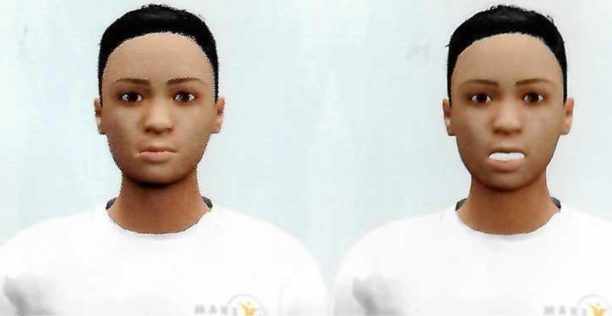
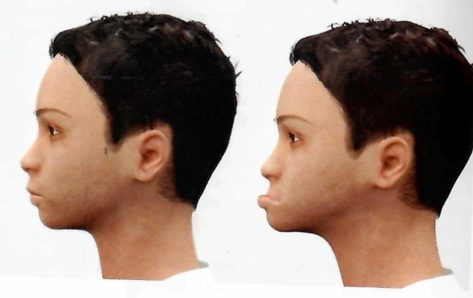

El principal objetivo de esta información es que usted y su familia conozcan en que consiste el tratamiento de la radioterapia y los posibles efectos secundarios que puede presentar al recibir tratamiento de radioterapia en cabeza y cuello.
Es importante que usted sepa que puede esperar y como debe cuidarse ante estos efectos.
Se debe tomar en cuenta que cada paciente reacciona de diferente manera y que la intensidad de los efectos dependen de la dosis, la zona irradiada y del estado general de salud.
Con las recomendaciones que le daremos se pretende orientarle con el fin de influir positivamente en su calidad de vida.
Si tiene alguna duda puede consultar al 2242-6700 ext: 7112.
CONCEPTOS BÁSICOS
¿QUÉ ES LA RADIOTERAPIA?
Es una forma de tratamiento en el que se utilizan radiaciones ionizantes con el fin de destruir o disminuir las células tumorales, esto depende del estado de la enfermedad y de reacción del organismo.
Se aplica irradiando directamente la zona donde está el tumor y en los ganglios que estén afectados.
El tiempo de cada irradiación es de 10 a 15 minutos donde necesitamos su completa colaboración no movilizándose.
Los efectos secundarios esperados los podemos dividir en efectos agudos o tardíos.
LOS EFECTOS AGUDOS
Generales: cansancio, malestar general pérdida de apetito y de peso.
Efectos en piel: enrojecimiento, picazón, agrietamiento y/o ulceración con secreción, caída de cabello en la zona que le irradian, esto puede ser temporal o permanente.
Mucositis: irritación de la mucosa de cavidad oral y garganta, puede aparecer entre la 2° y 3° semana del tratamiento, puede tener dificultad para tragar, dolor e incluso presentar infecciones.
Alteración de la Saliva y Gusto: La saliva disminuye y se vuelve más espesa. Inflamación de las Glándulas salivares, inicia con las dos o tres primeras dosis y se desaparece en forma espontánea. Alteración de la voz como ronquera.
EFECTOS SECUNDARIOS TARDÍOS O CRÓNICOS
Estos pueden aparecer luego de 3 meses o tras años de la finalización del tratamiento. Sequedad de boca (xerostomía) esto depende de la cantidad de glándulas salivales irradiadas durante el tratamiento puede ser transitoria o permanente.
Posibilidad de sensación de descarga eléctrica, con la flexión del cuello puede extenderse hasta brazos tronco y piernas, esto se da por la inflamación de la médula espinal y desaparece en forma espontánea. Inflamación del cuello produciendo una papada en la sub mandíbula.
RECOMENDACIONES
No consuma alimentos condimentados, picantes, ácidos, azucarados y de contextura áspera. Seleccione comidas con buen sabor y fáciles de masticar como: cereales cocidos, puré de papa y huevos revueltos, los alimentos son mejores líquidos o semisólidos. Los alimentos preferiblemente deben ser tibios o a temperatura ambiente.
Mantenga la boca húmeda.
Ingiera frecuentemente líquidos a temperatura ambiente.
Chupar pedacitos de hielo.
Chupar caramelos sin azúcar.
Tenga muchos cuidados bucales: cepillo suave, pasta de dientes sin mentol, enjuague de bicarbonato (2 cucharadas de bicarbonato en 600 c de agua) no utilice enjuagues con mentol.
Para humedecer la boca puede tomar linaza, manzanilla o agua.
No puede consumir alcohol ni fumar.
Debe informar ante cualquier duda o molestia dental.
En la piel debe: cuidar las marcas que le dejaron para dar el tratamiento, no debe rascarse la piel, no utilice jabón en la zona tratada, desodorantes, perfume, cremas o cualquier otro producto no recomendado. Para el baño utilice abundante agua, seque bien la zona con una toalla suave, a modo de palmaditas sin frotar la piel.
Cuando se encuentre en su casa, es recomendable que la zona que le están tratando esté descubierta el mayor tiempo posible.
Utilice ropa suave que no tenga contacto con la piel irradiada.
No utilice nada que presione la zona irradiada.
Si necesita rasurarse hágalo con rasuradora eléctrica no con maquinilla.
Debe protegerse del sol y cambios bruscos de temperatura, una vez terminado el tratamiento no puede exponerse al sol directamente además es recomendable que use protector solar.
Evite cargar bolsos u objetos pesados sobre los hombros.
No utilice esparadrapo ni adhesivos, podría ulcerar la piel tratada.
Usted debe ser valorado por un nutricionista antes y durante el tratamiento.
Debe procurar mantener su peso.
Utilizar utensilios de plástico (cuchara o tenedor para evitar molestia por temperatura o gusto metálico). Servir las comidas a temperatura ambiente. Comer despacio y no hacer excesivo esfuerzo con los dientes al masticar.
Distribuya su alimentación en 6 tiempos: Desayuno, Media mañana, Almuerzo, Media tarde, Cena, Antes de acostarse. Con el objetivo de hidratar la mucosa bucal y faringe es conveniente beber un vaso de líquido cada hora, o pequeños sorbos de agua de manzanilla.
ALIMENTOS RECOMENDADOS
Proteicos: Carnes blancas pollo o pescado, con salsa jugosas, salsa blanca o mayonesa, huevos a su gusto, Pastas, canelones, lasaña y gelatinas.
Lácteos: Yogures, leche, flanes, natilla, queso fresco, helados batidos, batidos de leche con chocolate, atole.
Frutas y Verduras: Cocidas en cremas y purés, frutas no ácidas maduras, colados, manzanas, melocotón, sandía, peras.
CUIDADOS FÍSICOS
En algunas ocasiones pueden aparecer rigidez en los músculos de la cara como: dificultad para abrir la boca, cuello y brazos que pueden provocar dolor, limitar los movimientos y alterar sus actividades cotidianas. Por ello la recomendación que realice los siguientes ejercicios:
EJERCICIOS DE MANDÍBULA


EJERCICIOS DE VOCALIZACIÓN
Frente a un espejo vocalice de forma exagerada las vocales de la "a" a la "u" repetidas veces.